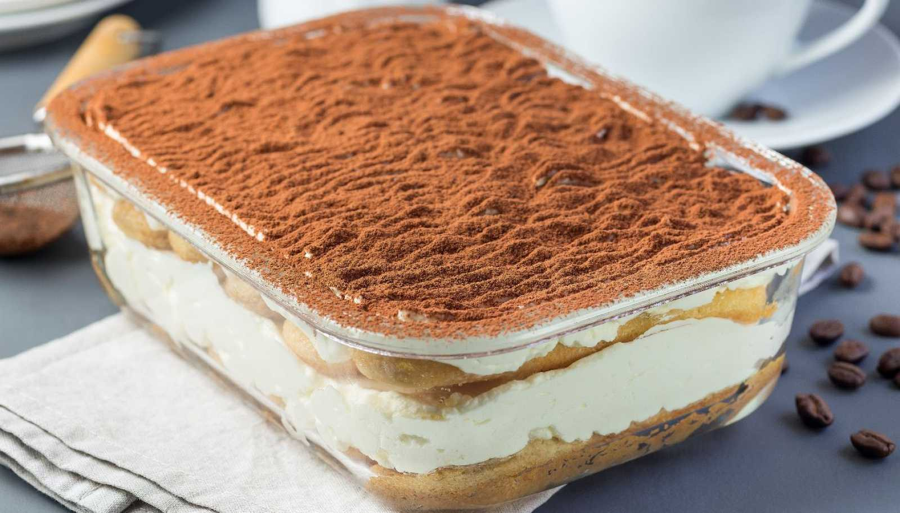

RECETA FACIL Y RÁPIDA DE TIRAMISÚ!
Ingredientes🍫
- Vainillas
- Café
- Huevos
- Azucar
- Cacao en polvo
- Queso crema
- Escencia de vainilla
- Cognac
Procedimiento🎂
- BATIR LAS YEMAS CON EL AZUCAR EN BATIDORA HASTA LOGRAR UNA PREPERACION ESPUMOSA, MEZCLAR CON EL QUESO BLANCO Y LA CREMA BATIDA A PUNTO CHANTILLI, PERFUMAR CON LA ESCENCIA.
- MEZCLAR EL CAFE CON EL COGNAC Y EL AZUCAR.
- TAPIZAR LA BASE DE UN MOLDE CON PAPEL MANTECA O ALUMINIO
- REMOJAR 8 VAINILLAS CON EL CAFE Y ACOMODARLAS EN LA BASE DEL MOLDE, COLOCAR UNA CAPA DE CREMA, CUBRIR CON 8 VAINILLAS REMOJADAS, Y EL EL RESTO DE LA CREMA, Y POR ULTIMO LAS 8 VAINILLAS REMOJADAS RESTANTES.
- LLEVAR A HELADERA POR LO MENOS 5 HORAS.
- CUBRIRLO CON EL CACAO EN POLVO.
